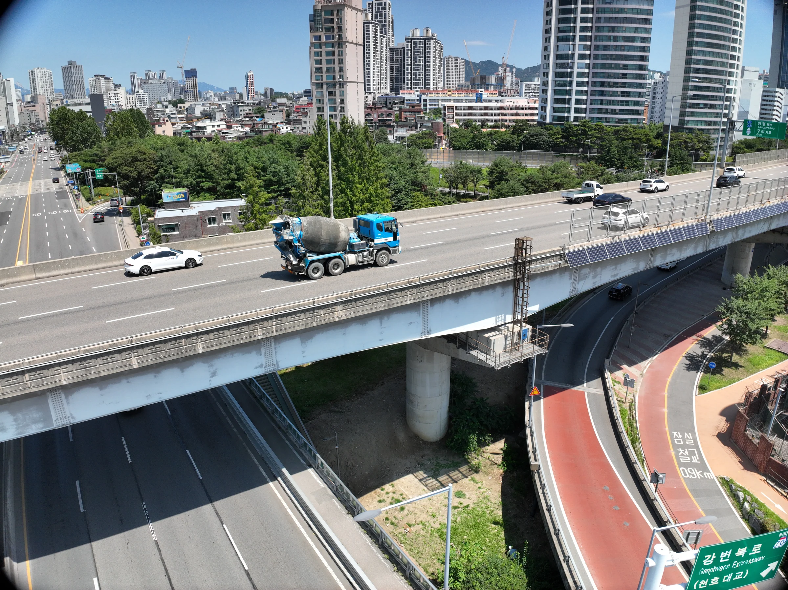

Structural Health Monitoring
Sensing and monitoring of civil structures

KOREA UNIVERSITY · CIVIL ENGINEERING
We develop AI, computer vision, and drone-based technologies for the maintenance and health monitoring of civil infrastructure.
AI · 컴퓨터 비전 · 드론 기술을 활용한 토목구조물 유지관리 연구실
RESEARCH AREAS
Sensing and monitoring of civil structures
Deep learning for crack and defect detection
Data-driven asset management of infrastructure
Virtual replicas of structures for prediction
Drone-based inspection of facilities
LATEST NEWS
View all newsJaehyuk Lee received Best Paper Award in 2025 KSMI (한국구조물진단유지관리공학회) Conference.
Click here for more information (동양일보)
“Automated Digital Transformation for Pedestrian Suspension Bridges Using Hybrid Semantic Structure from Motion” was published.